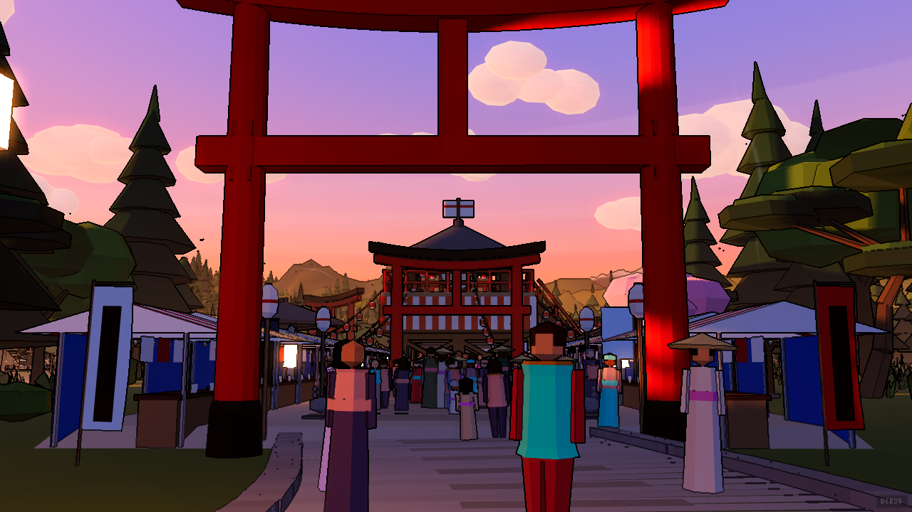
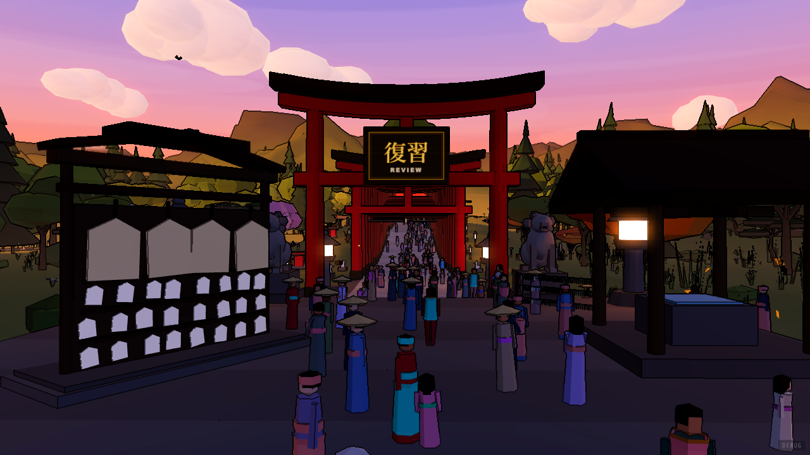
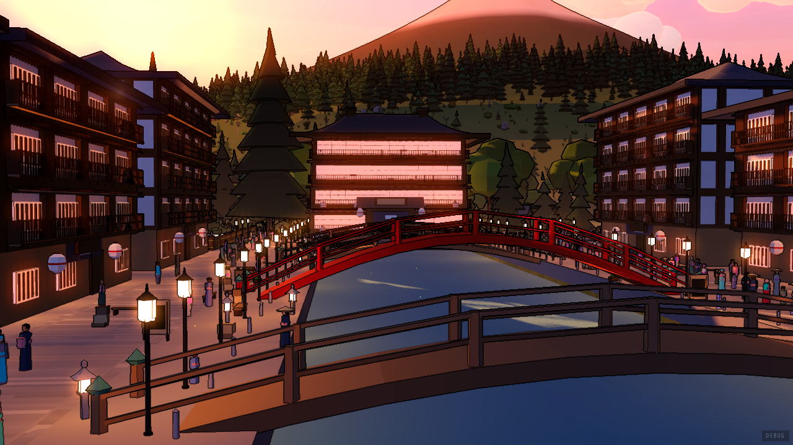

screens.html is the fifteen screens of the MENU. This card is the six that come
after it — the ones a session actually happens in — and every one of them is still drawn
in the app's old language: dark sepia panels, rounded boxes, thin monospace, a cassette-deck
border, and no valley behind any of it. They are also, between them, where nearly all of the time
in this app is spent. The front door is beautiful and you look at it for four seconds.
They are all one screen wearing six coats. A session is: something that says what you are in and how far through it you are, something that carries the work, and something that says what the whole set looks like. That is the frame contract already — crown, stage, foot — so nothing below invents a layout. It invents one object, the sheet, and then fills it six ways.
The daily games hub is not redesigned. It is deleted. Its whole
job is picking one of four puzzles, and assets/screen-road-daily.png — designed in
August, never ported — already does that as a road of four tablets. This is the script hub's
argument exactly: level three ends the walk, and a screen that asks a question the menu has
already answered is a screen with nothing in it. What needed designing was not the hub but the
four puzzles it opens, and one of them is below.
Look it up is not here either — it is the one piece of this
language that already reached the app (features/lookup/lookup.css), and settings was
always going to share its shell. So settings below is drawn on the sheet rather than on a
modal, and the two stay mutually exclusive.
The screen the app is mostly made of, and the one Robbie named. Today it is a character floating
in a brown void over a boxed answer panel, with the run's numbers set in 9px monospace above it.
Here it is a sheet of paper on the desk — which is the one arrangement that solves
legibility outright rather than fighting it: legibility.html says dark on light needs
neither halo nor keyline, and a round is twenty minutes of reading small type over a lit valley.

The prompt is a cell of the sheet, not a card of its own. One plate, split at 322px by a hairline: the question on the left at the size it deserves, the four slips on the right. Two plates would put a shadow between the character and its answers, and they are one act.
The run's numbers move to the crown. Round, streak and accuracy are what the front door keeps the clock and the level in — same place, same chips, same skew. The old screen set them in 9px monospace between the title and the character, which is the one place on the screen the eye has to cross on every single card.
The foot band is the whole round. Twenty ticks: gold answered, vermilion missed, cream where you are. That is the contract's foot band doing exactly what it is for — a whole-set summary, one object, thin, spanning the stage — and it is the thing the old screen said as "0/20" in a row of four look-alike counters.
Built September 2026, and four things changed on the way. The sheet is authored at
184, not 174 — measured on the running port, 174 paints its left edge at x 150, ten
pixels inside the moat, and this plate has been corrected to match. The heading is
English-led, because that is what chrome.ts already settled for every other
screen and this plate was still following the mockup's older hierarchy. The corner keeps
two tabs, Leave and Start over, because the old HUD had a restart and dropping it would
have been a removal rather than a redesign. And the answered state grew a verdict block
between the slips and the slab, carrying what a strip of paper cannot say — the message, the
combo, the time, the next review, the example sentence — so that nothing the old feedback card
told you was lost in the move.
The half the old screen does worst: it recolours the tile you pressed and moves on. A wrong answer is the only moment in a drill that can teach anything, so the sheet opens the gloss under the character and holds until you take the next one.
し plus a small や. The small kana swallows the vowel of the one before it — し + や would be two beats, しゃ is one.
Nothing moves. The character shrinks to make room for the gloss, the right answer takes a gold edge and the one you pressed takes a struck-through vermilion, the two you did not touch go quiet. The slab changes colour and sentence — vermilion is what you owe, ink is what comes next — and that is the whole state change. A screen that re-lays itself out between question and answer is a screen you have to re-read twenty times a round.
The heading's mark turns vermilion on a miss and nothing else in the crown moves. It is the smallest possible place to put "that one was wrong" that is still in your eye when you are looking at the answers.
Reached from the daily road, which already exists and is not built. The crossword is the hardest of the four to fit — it is the only one with a board that has a shape of its own — so it is the one drawn here; word search, match pairs and typing blitz are the same sheet with a different left cell.

The board is the prompt cell. Nine columns of 30px is 286 — it fits the 322 the round's character has, which is the point of having one sheet: a puzzle and a flashcard are the same object with different things in the left half.
The clue list folds. Ten clues do not fit and are not made to — five show and the rest become a line saying how many, which is the menu's own overflow law (nothing scrolls; what does not fit becomes a count on the edge it left over). The old hub had two thirds of a 1600px screen empty and still put its content in a scroller.
The one screen here with a real deadline, and the only place in the app where a chip is allowed to get louder. Everything else stays exactly where the round put it.
The stem is long, so the prompt cell is wider — 392 rather than 322 — and that is the only dimension any of these six change. A sentence with a hole in it is not a character; it needs a line length. The four particles are still four slips, still 1–4, still in the same corner of the screen they are in during a drill, which is the whole argument for one sheet.
The countdown is the only vermilion chip in the crown, and it is there because it is the only fact on any of these screens that is against you. Marked questions are vermilion ticks in the foot band — the same three-state strip the round uses, so "wrong" and "come back to this" are told apart by which screen you are on rather than by a legend.

a message left for someone. 伝 to convey, 言 to say — the two together are the note itself rather than the act of leaving it.
The two cells swap jobs and keep their sizes. On a drill the left cell asks and the right one answers; here the right cell is the text and the left is what the cursor is standing on. Same sheet, same hairline, same 322 — a reader who has done a drill already knows where to look, and the word being explained lands where the character was.
Nothing opens. The old reader put a definition in a popover over the sentence you were reading it from. There is a whole cell for it and it is never empty, so a lookup costs no motion and hides nothing.
Not a screen and not a modal: the same sheet Look it up already stands on
(lookup.css, .lk-sheet at 250, 152), because the design system already
says those two share a shell and are mutually exclusive. The old one is a 900px dialog with a
scrolling body called Control Panel.
Six groups down the left, six rows at a time on the right, and a count. Twenty-four settings do not fit on one sheet, and the answer is the same as everywhere else in this interface: they fold into groups, and the group says how many. The old dialog put all twenty-four in a scroller under a heading that said Quick app controls.
It stands on the valley dimmed to 66%, not on the stage — the same scrim
lookup.css already uses. These two are the only things in the app that are not a
place, so they are the only two that get to cover one.
Grouped by where you are, not by what the key is. Nobody looks this up to find out
what H does; they look it up to find out what is available here. Two
columns, four groups, and the keycap is the same object the hints in every screen's bottom
right already use — so the sheet is a longer version of something you have been reading all
along rather than a document about the app.
The sheet is about 90 lines of CSS: a plate, a hairline at 322 (392 for
the exam), a slips grid, a slab bled to the floor, and the foot band's tick strip. Everything
else on these plates already exists in menu.css — the heading slab, the caption chip,
the run chips, the back tab, the hints. The daily hub is a deletion, the way the script hub
was: the daily road replaces its picker and the four puzzles get the sheet.
The order to build them in is the order they are used. The round first and by a mile — it is where the app is spent. Then the passage and the exam run, which are the same sheet with one dimension changed. Then settings and the keys, which are the same sheet on the lookup's scrim. The four puzzles last: they are the only ones with a board of their own to fit, and they are the ones a learner can go a week without opening.